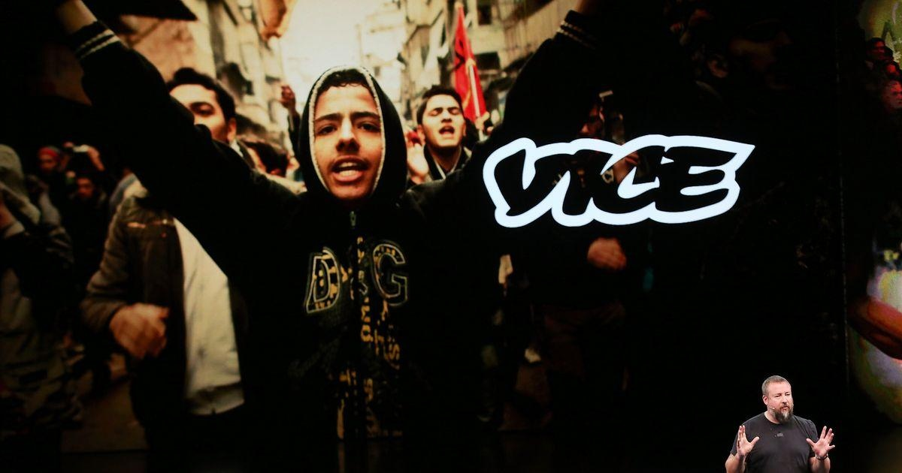

Vice Media Files For BankruptcyVice Media, once a paragon of the digital era, filed for bankruptcy on Monday, a dramatic fall from grace for a company once valued around $5.7 billion. A group of lenders could acquire Vice out of bankruptcy for $225 million, The New York Times reported, and the company will continue to produce content. But the bankruptcy will make years of massive investments by the likes of Disney and the Murdoch family worthless. The company’s co-chief executives, Hozefa Lokhandwala and Bruce Dixon, released a statement Monday saying the bankruptcy filing would eventually strengthen the company and usher in a new chapter. “We look forward to completing the sale process in the next two to three months and charting a healthy and successful next chapter at Vice,” the pair said in a statement to the Times. The bankruptcy had been expected for weeks. Fortress Investment Group, among the lenders that submitted a bid for Vice, plans to maintain a role for the company’s co-founder, Shane Smith, if it’s successful, the Times added. Executives at Vice had attempted to broker a sale and breathe fresh life and profitability into the company, but a deal never appeared. Last month Vice canceled its flagship “Vice News Tonight” show and announced a “painful” round of layoffs across the news division. |
 |